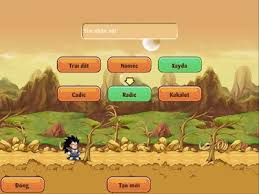
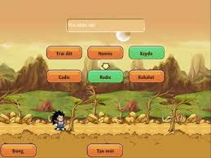

Sơ lược về Chú Bé Rồng Online
Chú Bé Rồng Online – game nhập vai trực tuyến với cốt truyện và nhân vật dựa trên bộ truyện
tranh nổi tiếng Nhật Bản Dragon Ball đã từng làm say lòng bao nhiêu thế hệ độc giả Việt Nam. Bạn
sẽ chọn theo hành tinh nào, Trái Đất, Na mếc hay Xay da? Cuộc hành trình tìm kiếm ngọc rồng và
chống kẻ hung ác sẽ bắt đầu nằm trong tay bạn.
Cùng với sự hướng dẫn của các bậc tiền bối và sự nỗ lực của bản thân, bạn có thể đạt đến sức
mạnh kinh hoàng, trở thành những chiến binh siêu hạng. Ngoài ra bạn sẽ không phải chiến đấu đơn
độc khi xung quanh bạn là những chiến binh cùng chí hướng, cùng hỗ trợ lẫn nhau đối đầu với các
thế lực hắc ám.
Ngọc Rồng là trò chơi trực tuyến đa nền tảng. Bạn có thể chơi được trên máy tính PC Windows,
iPhone, Các dòng máy chạy hệ điều hành Android, Windows Phone, và có cả bản Java chạy trên S40,
S60 cũ của Nokia. Với chất lượng cao và tốc độ mượt mà trên các loại đường truyền mạng ADSL, 3G,
GPRS.
Trò chơi thích hợp với mọi lứa tuổi. Điều khiển trực tiếp nhân vật rất dễ dàng trên màn hình cảm ứng. Khi chơi trên PC bạn chỉ cần dùng chuột, hoặc linh hoạt điều khiển nhân vật với bàn phím cứng điện thoại Nokia S40, S60 cũ.
Giới thiệu chung:
1. Class nhân vật:
Game được làm dựa trên cốt truyện của bộ truyện tranh nổi tiếng Dragon Ball. Khi tham gia vào thế giới Chú Bé Rồng Online, bạn có thể chọn tham gia vào 1 trong 3 hành tinh: Trái Đất, Namếc, Xayda với hình dạng và những khả năng riêng biệt.
 

2. Hệ thống nhà:
- Nguồn hồi phục KI và HP của các chiến binh chính là bằng đậu thần. Đậu thần có thể nâng cấp
được, và mỗi lần nâng cấp sẽ tốn một lượng vàng nhất định. Đậu cấp càng cao thì khả năng hồi
phục càng nhiều.
- Rương đồ dùng để chứa tài sản quý giá không tiện mang theo người.
3. Hệ thống map và NPC đa dạng:
- Những NPC nổi tiếng và gắn liền với cốt truyện của Dragon Ball. Thông qua các NPC đặc biệt như Thượng Đế, Thần Mèo, Thần Vũ Trụ, bạn có khả năng tăng sức mạnh và tiềm năng của nhân vật.
4. Hệ thống chiêu thức, chiến đấu và khả năng nhân vật:
Mỗi hành tinh có những hệ thống chiêu thức khác nhau, tùy vào sở thích và khả năng bản thân, bạn
có thể nâng cấp chiêu thức, cũng như tiềm năng bản thân để đạt sức mạnh cao nhất. Cân bằng hài
hòa giữa chỉ số bản thân và chiêu thức có thể giúp bạn rất nhiều trong con đường trở thành chiến
binh huyền thoại.
*Xayda có các chiêu thức huyền thoại điển hình như: Biến hình, Tự phát nổ
*Trái đất có các chiêu thức huyền thoại điển hình như: Quả cầu kênh khi, Kaioken, Trái dương hạ
san, Kamejoko
*Namếc có các chiêu thức huyền thoại điển hình như: Makankosappo, Đẻ trứng, Trị thương
5. Nhiệm vụ chính tuyến và nhiệm vụ thành tích:
- Game có các nhiệm vụ chính tuyến tiêu diệt quái, đạt sức mạnh, hạ boss, đa dạng phong phú đi
theo cốt truyện. Thông qua những nhiệm vụ này, bạn có thể rèn luyện bản thân khỏe mạnh và hoàn
thiện hơn
- Ngoài ra còn có thêm các nhiệm vụ hàng ngày, từ dễ đến khó, giúp các nhân vật tập luyện, khi
hoàn thành các nhân vật có thể được nhận thêm sức mạnh, tiềm năng
- Và có thêm hoạt động thành tựu, giúp người chơi có thể kiếm được ngọc hồng trong game thông qua
các hoạt động hàng ngày như đạt sức mạnh, đánh quái, online chăm chỉ,…
6. Vật phẩm:
- Nhân vật có thể kiếm vật phẩm trang bị cho nhân vật của mình bằng cách tích lũy vàng trong
game
hoặc đánh quái, hạ Boss rớt ra.
- Ngoài ra bạn có thể mua các sách kỹ năng để nâng cấp chiêu thức, cũng như cải trang để biến hóa hình dạng, tạo sự độc nhất cho nhân vật của mình.
7. Chức năng vật phẩm bay
Với thú cưỡi, các bạn sẽ được phục hồi KI trong khi bay,các vật phẩm bay đặc biệt có thêm các
Option đặc biệt để hỗ trợ người chơi tăng KI, HP . Hãy nhanh chóng tìm mua vật phẩm yêu thích và
hữu ích trên trong cửa hàng, có thể kiếm tại vòng quay thượng đế khi sự kiện diễn ra
8. Đệ Tử
- Xuất hiện 1 boss với tên gọi Broly ban đầu mới xuất hiện sẽ rất yếu. Nhưng khi đánh hắn, hắn sẽ mạnh dần lên đến khi hắn biến hình thành siêu xayda tóc vàng (Super Broly) và sẽ dắt theo 1 đệ tử. Nếu bạn đánh thắng Super Broly bạn sẽ nhận được tên đệ tử ấy.
- Đệ Tử Mabư: Vào lúc 22h tối hàng ngày, tại Thành phố vegeta, các nhân vật đi theo Tapion, và
tiêu diệt Boss Hirudegarn, khi mà hạ gục Boss sẽ có cơ hội nhận được Quả trứng
- Quả trứng sẽ xuất hiện trong nhà, sẽ có thời gian nở, các nhân vật có thể làm các nhiệm vụ
khó, siêu khó tại bồ mộng để giảm đi thời gian nở trứng, khi hết thời gian, sẽ có mục mở trứng
khi mở bạn sẽ nhận được Đệ tử Mabư (Sức mạnh có sẵn là 1tr5)
9. Ra mắt các võ đài
- Đại hội võ thuật
- Mỗi giờ trong ngày đều tổ chức theo từng giải: (Khi tham gia bạn phải đóng phí, và sau khi thắng bạn sẽ được tương đương phí cược đó) Khi đăng kí thành công, các bạn vui lòng đến sớm hơn thời gian lên sàn đấu, nếu Offline các bạn sẽ bị xử thua
- + Giải Nhi Đồng (8,14,18h)
- + Giải Siêu cấp 1 (9,13,19h)
- + Giải siêu cấp 2 (10,15,20h)
- + Giải siêu cấp 3 (11,16,21h)
- + Giải siêu cấp 4 (12,17,22,23h)
- Vị trí Đại Hội Võ Thuật là vách núi Kakarot nhé . Khi vô địch có thể nhận được: đá nâng cấp
- Võ đài bà Hạt Mít:
+ Khi các nhân vật dưới 150 triệu sức mạnh, các nhân vật có thể tham gia Võ đài sinh tử, tại Bà Hạt Mít ở Đảo kame, khi tham gia lần đầu sẽ không tốn phí
+ Đối đầu với các đối thủ như Dracula, Người vô hình, Bông băng, Vua quỷ, Thỏ đầu bạc Khi thắng các nhân vật có thể nhận được bùa 1h hoặc x1 vệ tinh bất kì
+ Bên cạnh đó, khi trận đấu diễn ra khán giả sẽ có cơ hội bình chọn cho bên mà mình thấy có khả năng chiến thắng.
- Võ đài lần thứ 23:
+ Các nhân vật có thể đánh bại các Boss theo thứ tự: Sói héc quyn, Ở dơ, Xinbato, Tàu pảy pảy, khi tham gia đánh bại các Boss các bạn sẽ nhận được phần thưởng rương gỗ tương đương với Boss ở cấp độ đó
+ Ví dụ bạn đánh thắng Sói héc quyn, bạn sẽ nhận được Rương gỗ cấp 1
- Giải siêu hạng:
+ Trong thế giới ngọc rồng có rất nhiều kẻ mạnh, bạn có thể chính minh sức mạnh của bạn tại Giải siêu hạng, với các đối thủ mạnh không kém
+ Mỗi ngày từ 19h-23h nếu các bạn đạt trong top 100, sẽ được hệ thống trao tặng ngẫu nhiên các phần thưởng hồng ngọc theo từng Top
- Võ đài liên server:
+ Trong thời gian 12h trưa và 20h tối hàng ngày (trận đấu diễn ra 48p), võ đài liên server được diễn ra, để các server chiến đấu giành sống sót cuối cùng mang vinh quang về cho Server mình
+ Mỗi thành viên sống sót có thể mang được phần thưởng cá nhân và cho vũ trụ của mình
10. Chiêu thức Lưỡng Long Nhất Thể:
Bao gồm 4 loại:
- Lưỡng long nhất thể: giữ trạng thái biến hình 10 phút, sau khi tách ra phải chờ 10 phút sau
mới dùng lại được. (dành cho dân Trái Đất và Xayda)
- Dùng bông tai Porata: ( có bán tại npc Urôn) dùng bông tai thì bất cứ lúc nào cũng hợp thể
được và chủ dùng tách ra khi sử dụng lại bông tai, bông tai dùng vĩnh viễn.(dành cho dân Trái
Đất và Xayda)
- Hợp thể của người Namek.(dành cho dân Namek)
- Hợp thể vĩnh viễn của người Namek: là đệ tử sẽ mãi mãi mất đi, khi đó toàn bộ sức mạnh của đệ
tử sẽ biến thành tiềm năng của sư phụ.(dành cho dân Namek)
11. Trang bị Pha Lê:
- Chức năng nâng cấp: Các nhân vật có thể tìm kiếm các viên đá có chức năng nâng cấp đồ từ việc đánh quái, thắng đại hội võ thuật, ..., các 5 loại đá này có chức năng khác nhau: Đá lục bảo(nâng cấp rada), Đá Saphia(nâng cấp giày), Đá Ruby(nâng cấp quần), Đá Titan(nâng cấp áo), Đá thạch anh tím( nâng cấp găng tay) để tăng lên các chỉ số mới
+ Ngoài ra còn có thêm Đá bảo vệ giúp bảo vệ cấp độ tránh bị rớt cấp
- Chức năng pha lê hóa trang bị: Những món đồ thích hợp(vải thô,lưỡng long,jean,zealot, v.v..), hãy đem tới đảo Kame gặp NPC bà hạt mít để được phù phép pha lê hóa cho trang bị của bạn. Những trang bị này sẽ trở nên vip hơn, mạnh hơn khi đã được phù phép. khi phù phép thành công món đồ bạn sẽ có thêm sao xám
- + Khi đánh quái sẽ có cơ hội nhận được trang bị pha lê có thể ép pha lê vào
- + Có 9 loại pha lê, 9 màu sắc và tác dụng khác nhau, bạn có thể dùng thêm ngọc rồng để sao pha lê hóa
- + Bạn hãy đến gặp bà hạt mít tại đảo kame để ép pha lê vào trang bị pha lê. Hãy nhớ trước khi ép ngọc NPC bà Hạt Mít sẽ cho biết trước thông tin nhé.
- Chức năng chuyển hóa trang bị
- + Chức năng chuyển hóa có thể dùng bằng vàng hoặc ngọc, khi nhân vật đã có các món đồ cấp 12: lưỡng long, vàng
- + zealot,jean calic [+4], các nhân vật có thể chuyển hóa cùng với trang bị thần linh.
12. Hoạt động phó bản hàng ngày
- Để tham gia các bạn đến gặp Lính canh rừng Bambo trái đất. Có 10 cửa ải : Từ tường thành đến Trại độc nhãn và cuối cùng là Tầng 1 , Tầng 2 , Tầng 3 , Tầng 4
13. Hệ thống Boss đa dạng
Hệ thống đi theo lối truyện từ các nhân vật phe phản diện gồm các boss: Xên, Fide, Tiểu đội sát thủ, Bộ đôi
Android19,20, giúp người chơi hình dung và trãi nghiệm săn boss đa dạng và rớt nhiều trang bị vật phẩm hiếm